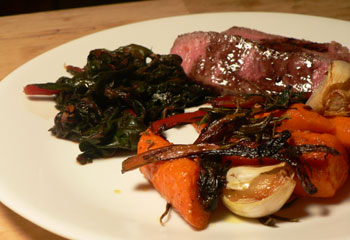

La Cense ribeye
My second attempt with La Cense grass-fed beef was a much bigger success than my first. This time I made the ribeye, using the same method of searing and then finishing in the oven. I stopped the cooking when the inside registered just 120ºF on my instant-read thermometer, and it was perfectly just past rare.

Even at this low temperature, the texture of the steak was not as appealing as that of the strip, which was much more tender despite being overcooked. This was slightly chewy and also a bit…dusty, if that makes any sense. The meat kind of fell apart at the edges in my mouth, and it made me think of Barletta’s bone dust.
On the side are Swiss chard leaves (sorry, Mrs. Lyons!) that I sautéed for an hour with garlic and sherry, and carrots that I roasted (to huge applause from myself) with unpeeled garlic cloves, the chard stems, rosemary, and cumin (all tossed with olive oil, salt, and pepper).
This two-part experiment made me realize that I like cooking steak. Eating it doesn’t excite me as much as unwrapping the butcher paper and having a big hunk of beef on my counter. It feels very 1950s, in a way that chicken breasts and mussels never do.
Add a comment